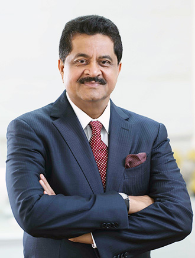

History: the journey to excellence

In 1997, a young and enthusiastic businessman from India founded the Thumbay Group in the UAE. He set up the UAE’s first private medical college in Ajman, which later became a full-fledged medical university, the Gulf Medical University (GMU). Confronted with the challenge of providing adequate clinical training opportunities for its students, he built the first private teaching hospital in the region, which laid the foundation of Thumbay Hospitals.
Soon after Thumbay Hospital – Ajman was launched, it emerged as a popular healthcare destination in the country, encouraging Thumbay Group’s healthcare division to set up a string of teaching hospitals at various locations in the UAE. This was in addition to a network of state-of-the-art family clinics ‘Thumbay Clinic’, a chain of pharmacies ‘Thumbay Pharmacies’ and a series of diagnostic centers ‘Thumbay Labs’ across the country.
Today, the man behind Thumbay Group, Dr. Thumbay Moideen heads the highly successful and diversified business conglomerate, as its Founder President. The group has diversified into around 20 brands, with presence across 16 sectors of business including Education, Healthcare, Medical Research, Diagnostics, Retail Pharmacy, Health Communications, Retail Opticals, Wellness, Nutrition Stores, Hospitality, Real Estate, Publishing, Information Technology, Trading, Marketing & Distribution
The president's message
Thumbay Hospitals have evolved as a leading name among healthcare providers in the region, and we pride ourselves on the fact that we are now one of the region’s largest networks of private academic hospitals. Over the past decade and a half, Thumbay Hospitals have become a healthcare icon and a household name in the UAE, for affordable and quality healthcare. Starting with one hospital in 2002, Thumbay Group’s Healthcare Division has today grown to 5 major hospitals and six family clinics in UAE and India. As per our strategic plan, we plan to have more than 15 hospitals and clinics operational in about 5 years. With our experience in education, healthcare and research, we are determined to expand our horizons to various other countries including India, Middle East and the African continent.
We offer a wealth of clinical experience in a collegial setting. We ensure the delivery of quality care with the highest level of expertise from medical experts backed by well-trained support staff, robust infrastructure and efficient systems and processes. Our goal is to build lasting relationships with people. We believe that the healing process is as much about personal care as medical attention. At Thumbay Hospitals we unite exceptional clinical success rates and superior technology with traditional care and warmth, as we truly feel the world is our extended family
Dr. Thumbay Moideen
Founder
President of Thumbay Group
Corporate Objectives
Vision
To be the leading network of academic hospitals in the Middle East.
Mission
To provide patient centered care of the highest quality in an academic set up.
Core values
Technology

As an international business conglomerate which recognizes technology as the key driver of growth, Thumbay Group lays a lot of emphasis on embracing technological advancements. The Healthcare Division of the Group is deeply committed to delivering the best healthcare services to its customers and hence are constantly involved in innovating and adopting the latest technology.
Thumbay Hospitals have made good use of information technology in simplifying the process of booking appointments, by enabling online booking on the website. The hospitals also use online insurance and online prescription platforms. The Android app of Thumbay Hospital is available for free download and delivers a host of services to users, like virtual tour of the hospitals, updates of camps/events, information on medical tourism services, as well as health monitors such as BMI calculator and Pregnancy/Ovulation trackers. The hospitals are also active across all major social media platforms, ensuring better reach and access.
Thumbay Hospitals have integrated wireless technology into the hospital systems. Wireless phones are used in the hospitals for calling nurses as well as for crucial actions like activating code blue & eliciting quick response. Furthermore, Hospital Information System (HIS) is fully integrated, enabling speedy ordering of materials, prompt report generation and quick retrieval of patients’ files. They have digital screens for displaying patient data, in addition to digital signage installed to promote wellness programs and provide information; all aimed at serving the patients better.
The seeds of exellence

Thumbay Group was founded in 1998 by a third generation entrepreneur from India, Dr. Thumbay Moideen. Today, almost two decades after its inception, the group has blossomed into a diversified international business conglomerate with operations in 20 sectors including Education, Healthcare, Medical Research, Diagnostics, Retail Pharmacy, Health Communications, Retail Opticals, Wellness, Nutrition Stores, Hospitality, Real Estate, Publishing, Technology, Media, Events, Medical Tourism, Trading and Marketing & Distribution.
The Thumbay Group is renowned for its high quality of service through innovation while gaining trust and respect in the minds of people and has a vision of being a leader in what it does and creating a mark in the global arena.
Thumbay Group UAE envisages a fast paced growth over the coming few years. Thumbay Group is in dialogue with leading companies from abroad, to be associated as business partners in the Middle East to strike an alliance in dealing and trading with products and services. Thumbay Group is keen to undertake franchisee operations in the Gulf region in order to open up chains of Coffee Shoppe, Health Club, Pharmacies, Laboratories and Opticals shops.